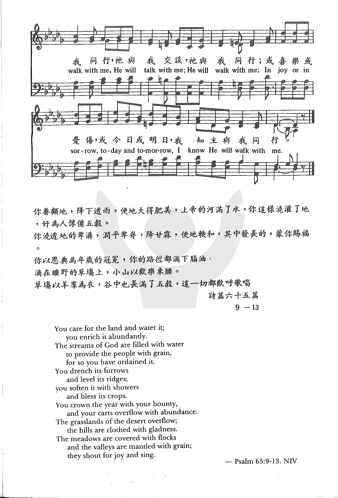

|
|
|
|
1. Jesus will walk with me down thru the valley, Refrain 2. Jesus will walk with me when I am tempted, 3. Jesus will walk with me, guarding me ever, 4. Jesus will walk with me in life’s fair morning, |
耶穌與我同行 Jesus Will Walk with Me |
|
https://www.zanmeishige.com/tab/26003.html?songbook=1&index=428

|
|
|
|
|

1230
Jesus Will Walk With Me 耶稣与我同行
| Text: | Jesus Will Walk With Me |
| Author: | H. L. |
| Tune: | [Jesus will walk with me down thro' the valley] |
| Composer: | Haldor Lillenas |
| Short Name: | Haldor Lillenas |
| Full Name: | Lillenas, Haldor, 1885-1959 |
| Birth Year: | 1885 |
| Death Year: | 1959 |
Rv Haldor Lillenas

DMus Norway/USA 1885-1959. Born at Stord, near Bergen, Norway, his father sold their 15 acre farm in Norway and emigrated to the U.S., buying a farm in Colton, SD. After he built a sod house, the family (wife and three chldren) also came to SD in 1887. They moved to Astoria, Oregon in 1889, where Lillenas learned English and began writing song lyrics at an early age. In 1900 the family moved again to Roseville, MN, where he worked as a farm laborer and began attending a Lutheran high school at Hawick, MN. He sold a few songs at age 19. At age 21 he began writing more songs, encouraged by some earlier ones becoming popular (“He set me free” was one). His mother died in 1906 and his father returned to ND, but Lillenas decided to move back to Astoria, OR, to finish a chemical correspondence course he had been taking. There he found employment in a chemical factory. He started attending a Lutheran church, but one evening he heard the song, “Tell mother I’ll be there”, sung at a mission. It made him decide to commit his life to Christ. An elderly lady who worked there told him about Jesus, and he began attending the Peniel Mission, a holiness rescue mission in Astoria, OR. He started working at the mission himself. In 1907 he moved to Portland, OR, where he worked with the Peniel Mission there, the mission paying most of his expenses. He was appointed leader of the mission. He saw many there come to know Christ and felt called to the Lord’s work. He joined the First Church of the Nazarene in Portland. Soon he enrolled in a ministerial course of study by correspondence. Soon afterward, he joined a vocal group associated with the Salvation Army called the ‘Charioteers Brigade’, which held street meetings and revival services throught much of CA. As a result of generous donations made, and efforts by his pastor, A O Hendricks, he was able to attend Pacific Bible College (later renamed Pasadena College), Los Angeles, CA. He also found part-time work to help support himself. He was soon a music director at a local church, and was preaching and writing songs. He also studied voice at the Lyric School of Music in Los Angeles, CA. While at Deets, he met and married Bertha Mae Wilson, also on an evangelistic team. Both preached. She was a songwriter like he. They practiced music at her father’s house and found that their voices blended well. They had two children: Evangline, and Wendell. They eventually became elders in the Nazarene Church, and she eventually became an ordained minister as well. He also studied music at the Siegel-Myers School of Music Chicago, IL. He composed songs for cantatas, Christmas, Easter, and special day services. He also used several pseudonyms in their composition. He traveled as an evangelist, then he pastored several churches (1910-1924) at Lompoc, CA, then Redlands, CA, and later in Indianapolis, IN. While there, In 1924, he founded the Lillenas Music Company (bought by the Nazarene Publishing Company in 1930). His wife preached at their pastorate until he was able to get the company up and running. While they owned the company, they published more than 700,000 hymnals. He worked as an editor there (after selling his company) until his retirement in 1950, becoming an advisor for them until his death. Also that year Lillenas purchased a 500 acre rural estate in Miller County, MO, where they built an Ozark home called ‘Melody Lane’. Lillenas joined the American Society of Composers, Authors, and Publishers (ASCAP) in 1938. In 1941 he received an honorable doctorate degree from Olivet Nazarene College, Bourbonnais, IL. In 1945 Bertha died of cancer, and later that year Lillenas remarried to a Lola Dell, and they lived in Melody Lane until 1955, when they moved to Pasadena, CA, attending the Nazarene Church there. They also made three trips to Norway after his retirement, and he wrote three books during that time: “Modern gospel song stories (1952), “Down Melody Lane (an autobiography): (1953), “Motoring 11,000 miles through Norway-A guide for tourists” (1955). In 1955 they toured Israel and sponsored a Palestinian Greek Orthodox family he had met as immigrants to the US that included Sirhan Bishara Sirhan (born in 1944). After they arrived in Pasadena, the Sirhan family stayed with Lillenas for several months, after which the Sirhans moved to a home Lillenas rented and furnished to them. When Mary Sirhan’s husband abandoned her and her two sons and returned to Jordan, Lillenas ensured that they were able to remain in the US. S B Sirhan was the convicted killer of Robert Kennedy. Lillenas wrote some 4000 hymn lyrics, supplying some for evangelists. Four of his song books contain his hymns: “Special sacred songs” (1919), “New Sacred Songs”, “Strains of love”, and “Special sacred songs #2”. He died at Aspen, CO. He is buried at Kansas City, MO. He was an author, editor, compiler, composer, and contributor. He edited and compiled over 50 song books.
John Perry
Tune Information
| Title: | [Jesus will walk with me down thru the valley] |
| Composer: | Haldor Lillenas |
| Key: | D♭ Major |
| Copyright: | Public Domain |
耶穌與我同行 Jesus Will Walk with Me
經過山谷有耶穌與我同行，或經平原主仍與我同行；
不論前途是幽暗或是光明，我無怨言若主與我同行。
試探來臨有耶穌與我同行，賜我力量使我完全得勝；
憂傷來臨主親自安慰同在，主大能手將我扶持安穩。
若遇風暴有耶穌與我同行，時常保護引我到平安地；
祂是策士又是我的安慰者，領我一生直到天家安息。
晨曦之時有耶穌與我同行，黃昏黑夜主仍與我同行；
不論生死祂總不把我丟棄，直到永遠耶穌與我同行。
（副歌）
耶穌與我同行，祂與我交談，祂與我同行；
或喜樂或憂傷，或今日或明日，我知主與我同行。
但以理的三個朋友被扔入火窯時，尼布甲尼撒王見到有四個人在火中行走，膚髮無損，他說神差遣使者救護倚靠祂的僕人。
我們無論在荒漠幽谷行走，在風暴烈火中受試煉，都有耶穌同行。
本詩的詞曲都是李理納（Haldor Lillenas,1885 –1959，見四月十八日）所作。
另有一首詩歌「與主同行榮耀無比」（It Is Glory Just to Walk with
Him），也是李理納譜曲，歌詞是關馨珊（Avis B. Christiansen, 1895-1985, 見九月廿七日）所作。
其歌詞如下：
何等榮耀！因主血救贖，
我能與祂同行，每日喜樂在我魂湧溢；
無論何往，我知祂親近，
就歡喜蒙引領，讚美主！一路榮耀無比。
何等榮耀！雖有黑影，
我知道祂正同行，仍喜樂向祂依靠禱祈；
何等榮耀！與主同在，
當晴天萬里無雲，祂同行，一路榮耀無比。
在彼黃金岸與祂同行，
更是榮耀無比，不再遊蕩或與祂稍離；
何等榮耀！奇妙榮耀！
能與祂永在一起，享榮耀直到永永遠遠！
（副歌）與主同行真榮耀無比，與主同行真榮耀無比；
祂必引領我腳步，跨越山嶺經幽谷，
與主同行真榮耀無比。
宣信 （A.B. Simpson）有一首詩歌『跟從主』（Step by
Step）勉勵我們每時每刻每一步都要與主同行。
跟從主
Step
by Step
與主同行是何等佳美，步步進，日日跟從；
一步一步跟從主腳蹤，與主同行始無終。
與主同行真安全無比，安然靠在主膀臂：
主領何往我必定跟從，無災害亦無傷悲。
一步一步跟從主耶穌，每時刻都跟從主；
雖無羽翼可飛上天庭，跟從主步步攀升。
懇求救主與我更親近，步步進，日日跟從；
一步一步跟從主腳蹤，跟從主由始至終。
（副歌）每一步，每一步，我要與主同行，
晨至暮，全程路，我要與主同行。
中英文聖詩集參考
英文歌名 Jesus
Will Walk with Me
教會聖詩 428
青年聖歌II 25
讚美 320
英文歌名 It
Is Glory Just to Walk with Him
青年聖歌III 62
英文歌名 Step
by Step
生命聖詩 400
http://www.hymncompanions.org/Apr/03/stream.php
https://www.youtube.com/user/PaulSoccer29/playlists